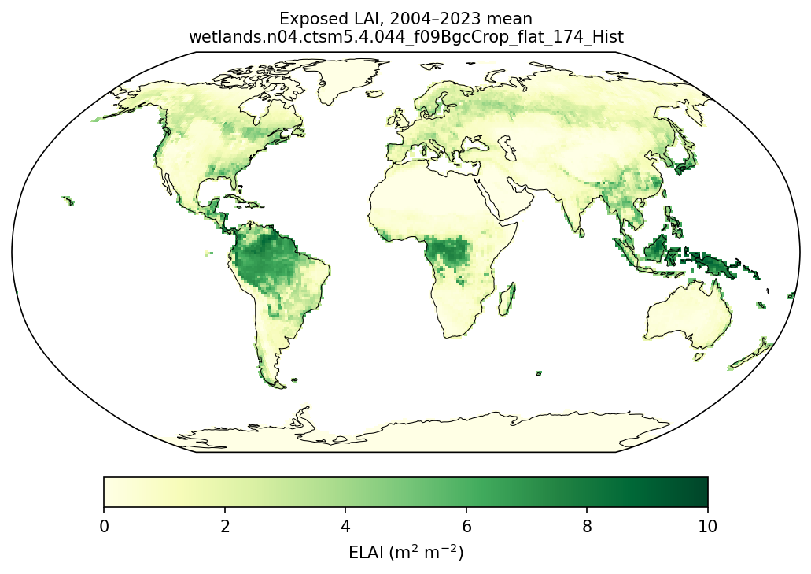

Land#
This notebook is an introduction to analyzing CLM land model results from a global simulation. It uses results from a case similar to the ones you have been running in the Tutorial, but run for longer in order to provide more output. We’ve prestaged model results from this simulation and another simulation using a different model configuration in a shared directory. This way you can get started on analyzing simulation results and compare differences caused by model structure.
Learning Goals#
Read in global CLM data
Make basic spatial plots
Make basic timeseries plots
Running CUPID’s LDF (Land Diagnostic Framework) from a CLM checkout#
CUPiD stands for CESM Unified Postprocessing and Diagnostics.
ONE-TIME instructions#
Today we have you working on Casper, though the next three lines could (if necessary) be executed on Derecho. Derecho is the preferred option for running CLM and CESM simulations, while Casper is the preferred option for processing model output.
We hope to eventually release a version of the CLM that includes CUPiD. For now we have you clone a branch that tests this idea in a recent version of the CLM.
The following lines:
clone the branch into a new directory CUPiD.n01_ctsm5.4.017
enter the directory just created
update submodules, one of which is CUPiD
enter the directory tools/CUPiD
create the conda environment needed to run the LDF and ILAMB
check that the cupid-analysis environment got created
git clone -b branch_tags/CUPiD.n01_ctsm5.4.017 https://github.com/ESCOMP/ctsm.git CUPiD.n01_ctsm5.4.017
cd CUPiD.n01_ctsm5.4.017
./bin/git-fleximod update
cd tools/CUPiD
mamba env create -f environments/cupid-analysis.yml --yes
conda env list
LDF ON CASPER#
First we initiate an interactive session that requests specific Casper resources for LDF and ILAMB to run smoothly. Then we set up our environment by loading some modules and activating cupid-analysis.
qsub -I -X -l select=1:ncpus=12:mpiprocs=12:mem=120GB -A <account_num> -q casper@casper-pbs -l walltime=03:00:00
cd examples/land_only
module load conda
conda activate cupid-analysis
module load nco
Now copy either config_subset.yml or config_full.yml into config.yml. The former is a short version of the latter, more suitable for the limited time available during this Tutorial’s labs.
cp config_subset.yml config.yml
Next generate the LDF_config.yaml file. For structured global grids, such as the f19 grid used in this Tutorial, point to the “sturctured” template. For unstructured global grids, such as the ne30, point to the “unstructured” template.
../../helper_scripts/generate_ldf_config_file.py --cupid-config-loc . --ldf-template ../../externals/LDF/config_clm_structured_plots.yaml --out-file LDF_config.yaml
Before running LDF, you must update the just-generated LDF_config.yaml with simulation names, years, etc. pertaining to your cases.
../../externals/LDF/run_adf_diag LDF_config.yaml > ldf.out &
Plots will appear in the case name under LDF_output. When the LDF completes, copy the entire case directory to your laptop, initiating the command from your laptop. To view, click on the case, then website, then index.html.
scp -r <specific_case> <your laptop's desktop>
ILAMB ON CASPER#
Here we continue in the same interactive session started by the earlier qsub command.
cd ../external_diag_packages
Before generating ilamb_nohoff_final_CLM_BGC_subset.cfg, you must update config.yml with simulation names, years, etc. pertaining to your cases. Here you could replace BGC_subset with BGC or SP.
../../helper_scripts/generate_ilamb_config_files.py --cupid-config-loc . --run-type BGC_subset
The last tool will remind you that you need regridded files to run ILAMB. In this case we will copy LDF’S regridded files that were generated earlier.
cp -r /glade/derecho/scratch/<user>/cupid_output/<case>/lnd/proc/regrid /glade/derecho/scratch/<user>/archive/<case>/lnd/hist/.
Note that you should also modify model_setup.txt if necessary at this time. Specifically for timeslice simulations, set “shift” values “N, 2000” where N is the start year of the timeslice simulation’s data as set in config.yml. This allows ILAMB to compare timeslice simulations to observed datasets.
Now we set ILAMB_ROOT, and we kick off ilamb-run. If your shell is tcsh change the next command to “setenv ILAMB_ROOT ../../ilamb_aux”
export ILAMB_ROOT=../../ilamb_aux
mpiexec ilamb-run --config ./ilamb_nohoff_final_CLM_BGC_subset.cfg --build_dir ./ILAMB_output/ --df_errs ./ilamb_aux/quantiles_Whittaker_cmip5v6.parquet --define_regions ./ilamb_aux/DATA/regions/LandRegions.nc ./ilamb_aux/DATA/regions/Whittaker.nc --regions global --model_setup ./model_setup.txt --filter .clm2.h0 >&! ilamb.out &
Plots will appear in ILAMB_output. When ILAMB completes, copy the entire directory to your laptop, initiating the command from your laptop. To view, click index.html.
scp -r ILAMB_output <your laptop's desktop>
Claude code#
If you have access to AI, consider trying AI to generate plots for you.
First I went to the directory with the model output::
cd /glade/campaign/cgd/tss/people/slevis/i_cases/cases_ctsmtutorial2026
Here I gave Claude code on derecho this prompt:
I would like a map of ELAI averaged from the last 20 years of the Hist simulation here; model output is under lnd/hist in the h0a files; can you generate that?
I got this response after about 5 minutes:
Files:
- Map: /glade/work/slevis/tmp/claude-6210/-glade-campaign-cgd-tss-people-slevis-i-cases-cases-ctsmtutorial2026/64ee8bcc-d8a4-4bbe-b2d6-f0749d8f82da/scratchpad/ELAI_Hist_2004-2023.png
- The averaged field, as NetCDF: /glade/work/slevis/tmp/claude-6210/-glade-campaign-cgd-tss-people-slevis-i-cases-cases-ctsmtutorial2026/64ee8bcc-d8a4-4bbe-b2d6-f0749d8f82da/scratchpad/ELAI_Hist_2004-2023.nc
- Script, if you want to rerun or tweak it: /glade/work/slevis/tmp/claude-6210/-glade-campaign-cgd-tss-people-slevis-i-cases-cases-ctsmtutorial2026/64ee8bcc-d8a4-4bbe-b2d6-f0749d8f82da/scratchpad/elai_map.py
How it was averaged:
- Period: the run goes from 1850 to 2023, so the last 20 years are 2004–2023. That's the 240 monthly h0a files from 2004-01 through 2023-12.
- Date check: the time_bounds in these files show that each file's date is the month it averages (for example, 2023-12 covers Dec 1 to Jan 1). That means none of the months is shifted by one.
- Weighting: each month is weighted by its number of days, so it's a true time mean.
- Plot: Robinson projection, YlGn color scale from 0 to 10.
Results: the highest value is about 9.2 m²/m², in the Amazon, Congo and Maritime Continent rainforests. The average over land grid cells is about 1.15. That average doesn't account for differences in grid-cell area, so it isn't a true global mean.
I can add a land-area-weighted global mean, seasonal maps, or a comparison with the pSASU case if you want.
…and I copied the file where it would be visible from this notebook:
cp /glade/work/slevis/tmp/claude-6210/-glade-campaign-cgd-tss-people-slevis-i-cases-cases-ctsmtutorial2026/64ee8bcc-d8a4-4bbe-b2d6-f0749d8f82da/scratchpad/ELAI_Hist_2004-2023.png ~slevis/CLM-Tutorial/notebooks/diagnostics/clm_ctsm/.
